Ten published papers in additive manufacturing, polymer processing, and machine learning, each with its abstract, headline results, and figures drawn from the work itself. Core theme: making fused-filament parts stronger and more reliable through in-process thermal control, characterization, and data-driven modeling.
10
Published papers
3★
First author papers
3 · 7
Journal · conference
4
Journals reviewed for
Additive Manufacturing & Polymer Processing
8 papers
Journal2026★ First author
A review of design and fabrication strategies for thermoplastic lightweight thin-walled stiffened shells and lattice structures utilizing FFF
Rakin Ahmed, Israt Sharmin Dola, Sakib Ahmed, Md Mahmudur Rahman, Tanvir Ahmed Shanto, Robert Taylor
Int. J. of Advanced Manufacturing Technology · 2026 · 144:6111–6158 · Critical Review
AbstractThe demand for lightweight and mechanically reliable structures has motivated increased interest in Additive Manufacturing (AM), particularly Fused Filament Fabrication (FFF), while underscoring the importance of an integrated understanding of the design-to-fabrication workflow. While numerous studies have focused on individual aspects of the FFF process, detailed reviews linking design strategies, optimization techniques, and manufacturing challenges are scarce. This work addresses that gap by reviewing current strategies for designing and fabricating lightweight structures using FFF. It investigates Design for Additive Manufacturing (DfAM) concepts and Topology Optimization (TO) techniques adapted for thin-walled and lattice structures, extensively examines the limitations of traditional CAD tools, and summarizes major manufacturing challenges. It concludes by outlining prospective future research avenues, including artificial intelligence–driven process control and digital twins for predictive modeling.
Key results
Unifies DfAM, topology optimization & generative design for thin-walled and lattice structures
Maps the limitations of traditional CAD tools and the major FFF manufacturing challenges
Charts AI-driven process control and digital twins as next-generation directions
48-page critical review (pp. 6111–6158)
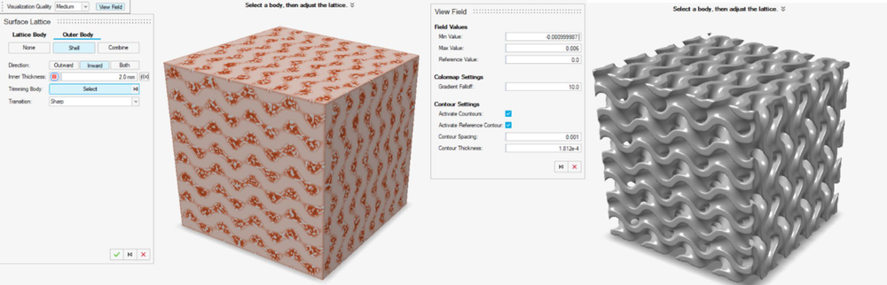
Representative lattice and stiffened unit-cell topologies surveyed for FFF.
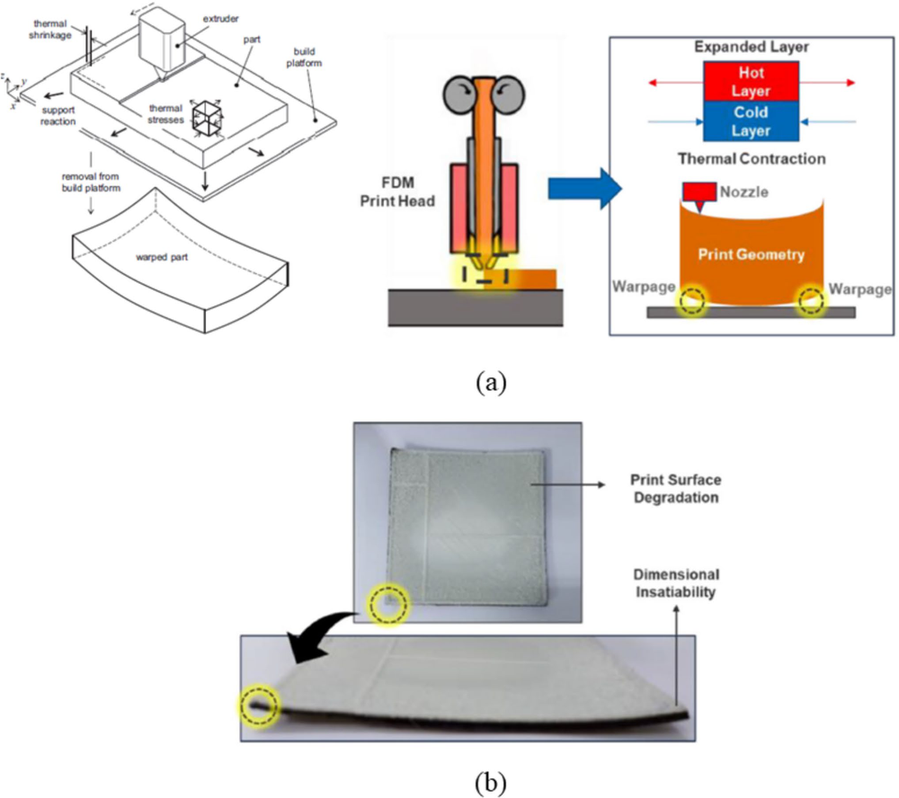
From topology optimization to a manufacturable lightweight part.
AbstractFused Filament Fabrication (FFF) is widely adopted for its affordability and design flexibility, but printed Acrylonitrile Butadiene Styrene (ABS) parts often exhibit poor Z-direction strength due to weak interlayer adhesion and residual stresses. To address this, an enhanced printhead enabling in-situ annealing was employed to promote improved bonding through controlled thermal management. This study leverages machine learning (ML) to predict mechanical toughness from thermal features captured by infrared thermography. Forty-four thermal features were analyzed using correlation and Principal Component Analysis, retaining 99.8% variance. Multiple classifiers, k-Nearest Neighbors, Decision Trees, Naïve Bayes, Support Vector Machines, Artificial Neural Networks, XGBoost, and CatBoost, were evaluated. Artificial Neural Networks achieved the highest balanced accuracy (86.7%) and Area Under the Curve (90.7%) for toughness classification. The integration of thermal monitoring with ML shows strong potential for non-destructive, real-time quality assurance in thermoplastic additive manufacturing.
Key results
44 thermal features → PCA retains 99.8% of variance
ANN best: 86.7% balanced accuracy, 90.7% AUC for toughness classification
IR thermography + ML enables non-destructive, real-time quality assurance
Built on a patent-pending in-situ annealing printhead
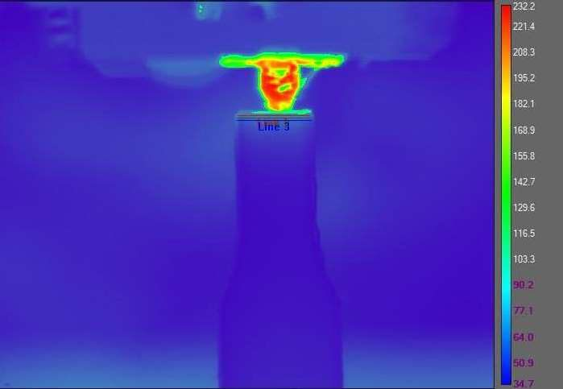
Infrared thermal signature of the enhanced printhead during deposition.
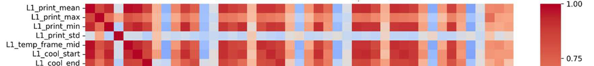
Per-layer thermal feature maps used to train the toughness models.
Experimental characterization of enhanced fused filament fabrication (FFF) of tall thin-walled structures using polylactic acid (PLA)
Parimal Patel, Rakin Ahmed, Tanvir Ahmed Shanto, Ankur Jain, Robert M. Taylor
Int. J. of Advanced Manufacturing Technology · 2025 · 139:5663–5675
AbstractTall thin-walled structures are often a key component in aerospace, automotive, and other applications. Additive manufacturing of such structures using fused filament fabrication (FFF) is particularly challenging when good mechanical properties and geometric accuracy are desired. This work enhances the flexural strength of such structures without compromising geometric accuracy. A previously demonstrated technique of improving layer-to-layer bonding by providing additional thermal energy during printing is used to print structures much taller than standard tensile specimens. Mechanical characterization of PLA parts is carried out using a 3-point bend test, and geometric deviation, surface roughness, and interlayer bonding potential are evaluated. Results demonstrate that providing additional in-situ thermal energy more than doubles the bending strength and significantly increases bonding potential while maintaining or exceeding geometric accuracy and surface finish, for both single-bead and multi-bead walls.
Key results
Additional in-situ thermal energy more than doubles bending strength
Geometric accuracy and surface finish maintained or improved
Validated on both single-bead and multi-bead tall walls
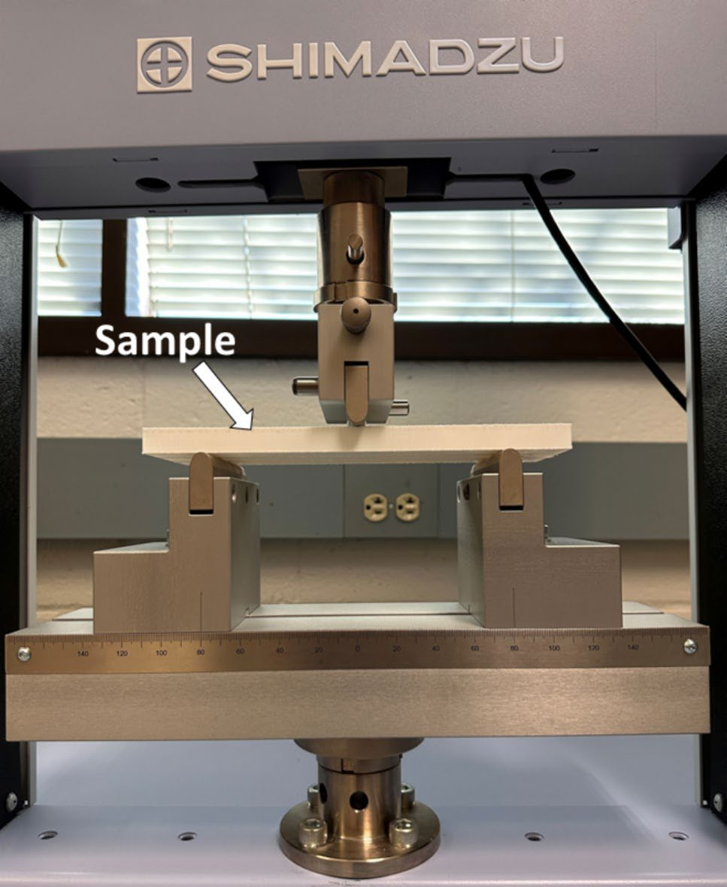
Three-point bend testing of a tall thin-walled PLA specimen (Shimadzu).
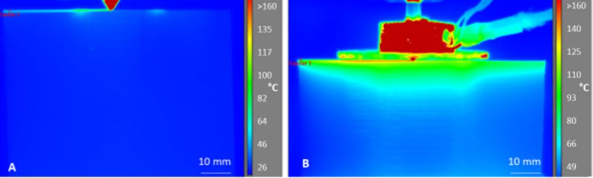
In-process thermography: enhanced printhead (right) vs standard (left).
Evaluation of in-process heating for extrusion printing of tall thin-walled structures
Parimal Patel, Md Mahmudur Rahman, Tanvir Ahmed Shanto, Rakin Ahmed, Preetam Kulkarni, Victoria C. P. Chen, Ankur Jain, Robert M. Taylor
Progress in Additive Manufacturing · 2026
AbstractCompared to other additive manufacturing processes, extrusion printing offers a cost-effective solution for prototyping thin-walled structures, but transitioning prototypes into functional parts remains difficult due to weak interlayer bonding and voids. Post-processing such as annealing can help but often compromises geometric accuracy. In this work, the attributes of in-situ heating, heater block alignment and temperature, along with print speed and material conditioning, are evaluated for their effect on flexural strength and geometric accuracy. A detailed design of experiments (DOE) using a novel heater block quantifies the statistical effects of these parameters on a unique double-bead, tall thin-walled PLA structure. Studied parameters significantly affect bending strength while average deformation in height, width, and length stays below ±2 mm. The highest model-predicted bending strength of 51.10 MPa, a 25.0% increase over standard specimens (41 MPa), is achieved with an aligned heater block at 245 °C using dried filament printed at 1200 mm/min.
Key results
DOE on a novel heater block: +25% bending strength (51.1 vs 41 MPa)
Deformation held under ±2 mm in height, width and length
Optimum: aligned block at 245 °C, dried filament, 1200 mm/min
Voids reshaped sharp→circular with better raster neck growth
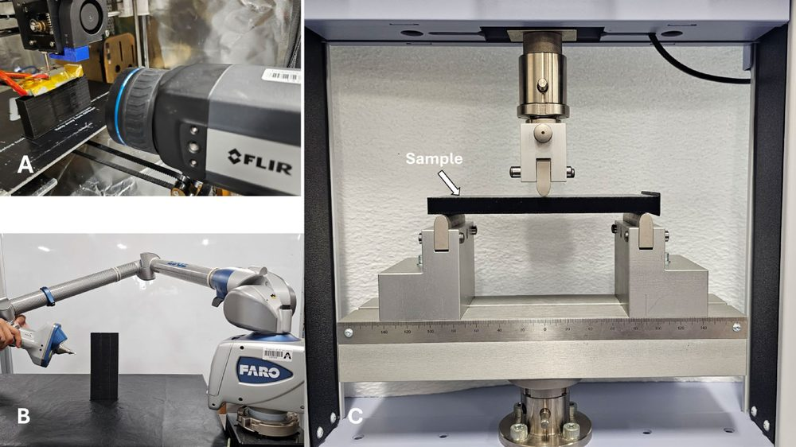
Experimental setup, FLIR thermography, FaroArm scanning, and flexural testing.
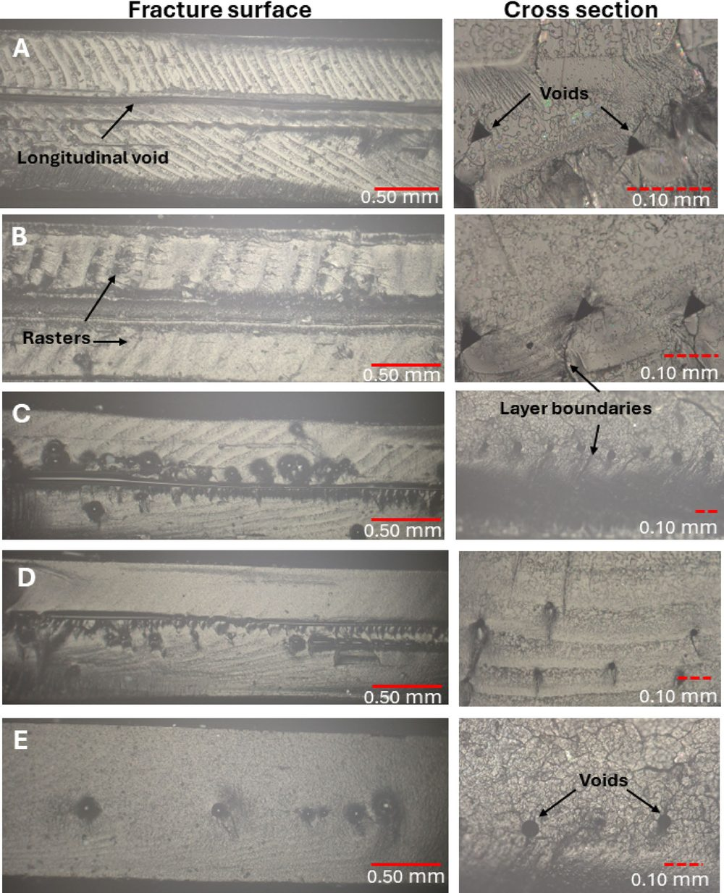
Fracture surfaces and cross-sections: voids shift from sharp to circular with heating.
Evaluation of Deep Learning Architectures for Defect Detection in Fused Filament Fabrication
Israt Sharmin Dola, Rakin Ahmed, Muhammed Jawaad Zulqernine, Tanvir Ahmed Shanto, Robert M. Taylor
SAMPE 2026 · Seattle, WA
AbstractWith the growth of smart manufacturing, reliable and automated defect detection in additive manufacturing (AM) is essential to ensure structural integrity and industrial adoption. This work evaluates and compares three deep-learning computer-vision architectures, YOLO, Mask R-CNN, and DeepLab, for detecting and segmenting typical FFF defects such as cracking, warping, stringing, off-platform errors, and layer shifting. Object detection and semantic segmentation approaches were evaluated using image data from controlled in-house experiments and external sources, focusing on variation in defect size and severity. Model performance was assessed with mean Average Precision (mAP), AP50, Intersection over Union (IoU), and Dice coefficient. Results indicate that YOLO provides superior object-level localization across most defect categories, while Mask R-CNN enables improved spatial interpretability through instance-level segmentation, and DeepLab performs well primarily for compact defects.
Key results
Benchmarks YOLO, Mask R-CNN & DeepLab on five FFF defect types
YOLO best at object-level localization; Mask R-CNN best interpretability
Evaluated with mAP, AP50, IoU & Dice for in-situ quality monitoring
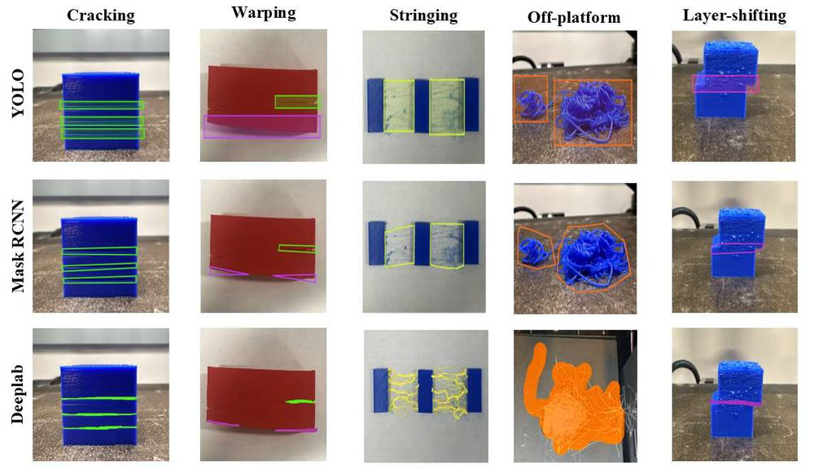
Detection and segmentation across defect types for each architecture (YOLO / Mask R-CNN / DeepLab).
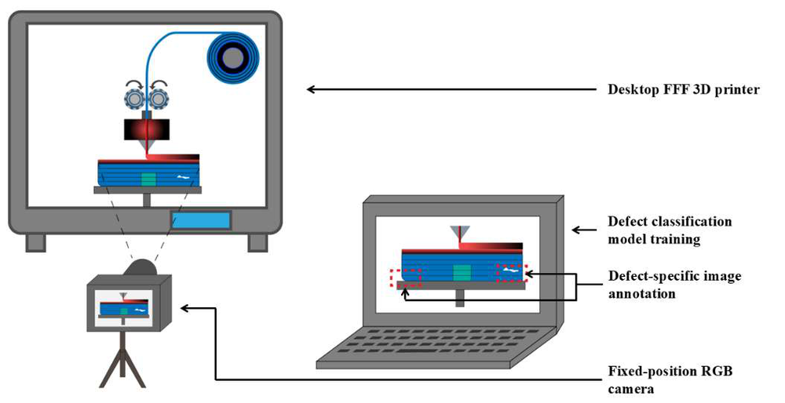
Image-acquisition and defect-classification pipeline.
Leveraging Large Language Models for Process Parameter Optimization in 3D-printed ABS Polymer Specimens
Tanvir Ahmed Shanto, Hamza Reza Pavel, Rakin Ahmed, Md Abdullah, Robert M. Taylor
IISE Annual Conference & Expo 2025
AbstractOptimizing process parameters in Fused Deposition Modeling (FDM) to accurately predict the mechanical strength of 3D-printed ABS parts remains challenging, and conventional methods such as Design of Experiments (DOE) often fail to efficiently handle complex, non-linear interactions among parameters. This paper introduces an approach using Large Language Models (LLMs), Microsoft Phi-2, Qwen2.5-Math-1.5B, DeepSeek-R1-Distill-Qwen-1.5B, and StableLM-3B-4e1t, for predictive modeling of tensile strength based on few-shot inference. Experimental tensile data from specimens with varied nozzle type, extrusion width, and print speed were used, and performance assessed with MAE, RMSE, and R². Phi-2 showed superior predictive capability, indicating significant potential for rapid adaptation in additive manufacturing scenarios with limited data.
Key results
LLMs (Phi-2, Qwen2.5-Math, DeepSeek-R1-Distill, StableLM) for few-shot strength prediction
Phi-2 best across MAE / RMSE / R²
A flexible alternative to DOE for small-data parameter tuning
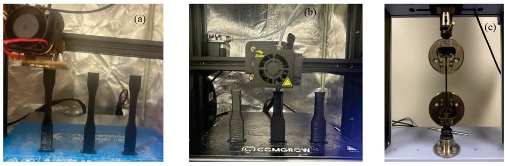
LLM-based few-shot framework for predicting tensile strength from FDM parameters.
A Statistical Approach for Evaluating Printing Temperature and Material Flowrate Effects on Lightweight Polylactic Acid in FFF
Sakib Ahmed, Md Mahmudur Rahman, Tanvir Ahmed Shanto, Rakin Ahmed, Robert M. Taylor
IISE Annual Conference & Expo 2026
AbstractFused Filament Fabrication (FFF) has rapidly expanded as a tool for producing lightweight, customizable components, yet the process-material interactions that influence mechanical performance remain an active research area. This study investigates the effects of temperature and flowrate variation on thermoplastic lightweight polymer polylactic acid (LW PLA) through a full-factorial design of experiments (DoE). Tensile coupons printed under controlled conditions evaluate how printing temperature and flowrate individually and interactively influence toughness. Analysis of variance (ANOVA) shows that both the main effects and the interaction effects of the selected factors are statistically significant for mechanical toughness, providing practical insights for selecting optimal process settings that balance performance and efficiency in foaming LW-PLA.
Key results
Full-factorial DOE on temperature × flowrate in lightweight (foaming) PLA
Both main and interaction effects significant for toughness (ANOVA)
Guides optimal, efficient process settings for LW-PLA
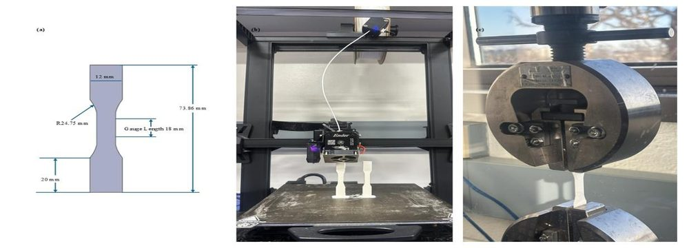
Tensile specimen geometry and the flexural / tensile test setup.
A Statistical Study on Influence of Build-Volume Temperature and Bead Overlapping of PEI in FFF
Md Mahmudur Rahman, Sakib Ahmed, Tanvir Ahmed Shanto, Rakin Ahmed, Robert M. Taylor
IISE Annual Conference & Expo 2026
AbstractAdditive manufacturing, particularly FFF, is increasingly popular for high-performance applications, but reliable results with high-performance polymers (HPPs) demand careful process optimization. ULTEM™ 9085 (PEI) is one such polymer, known for excellent thermal, mechanical, and chemical properties. This study investigates two important process parameters: build-volume temperature and infill overlap between deposited filaments. A full-factorial DoE was performed using build-volume temperature at three levels (80, 100, 120 °C) and infill overlap at three levels (0%, 10%, 16.67%). Higher build-volume temperature helps layers bond better, and a small overlap creates a 'squish effect' that presses beads together, reducing voids, increasing contact area, and making parts denser and stronger. Both factors have individually strong influence on the quality and mechanical strength of printed PEI parts.
Key results
Full-factorial DOE on ULTEM 9085 (PEI): chamber temperature × bead overlap
Higher chamber temp + small overlap ('squish effect') → denser, stronger parts
Practical guidance for high-performance polymer FFF
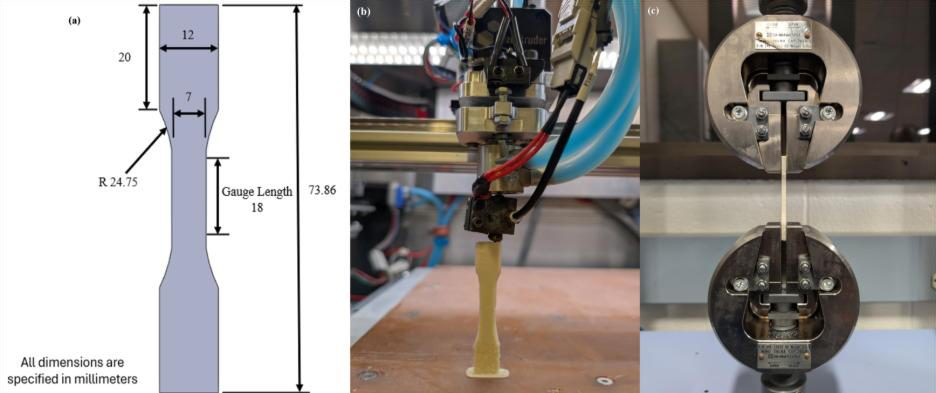
Dogbone specimen dimensions and tensile testing of printed PEI coupons.
Application of Fused Filament Fabrication in the Marine Sector, from Rapid Prototyping to Final Product
Rakin Ahmed, Rounak Saha Niloy, Md Rahat Mozumder, Tanvir Ahmed Shanto
14th Int. Conf. on Marine Technology (MARTEC 2024) · Johor Bahru, Malaysia
AbstractAdditive Manufacturing (AM), due to its significant advantages over conventional manufacturing, has gained much popularity, especially its ability to manufacture complex geometries with reduced material waste, making it appealing for industrial-scale manufacturing. Among the various AM techniques, Fused Filament Fabrication (FFF), due to its simplicity and inexpensive operation and material cost, is being used widely in product manufacturing across sectors. This paper reviews recent advancements and research in the marine sector through FFF, examines the limitations of its use, briefly reviews recent attempts to overcome those limitations, and identifies future research directions focused on the applicability of FFF in the marine sector.
Key results
Reviews FFF across the marine sector, from prototyping to end-use parts
Catalogs current limitations and mitigation strategies
First author conference paper (MARTEC 2024)
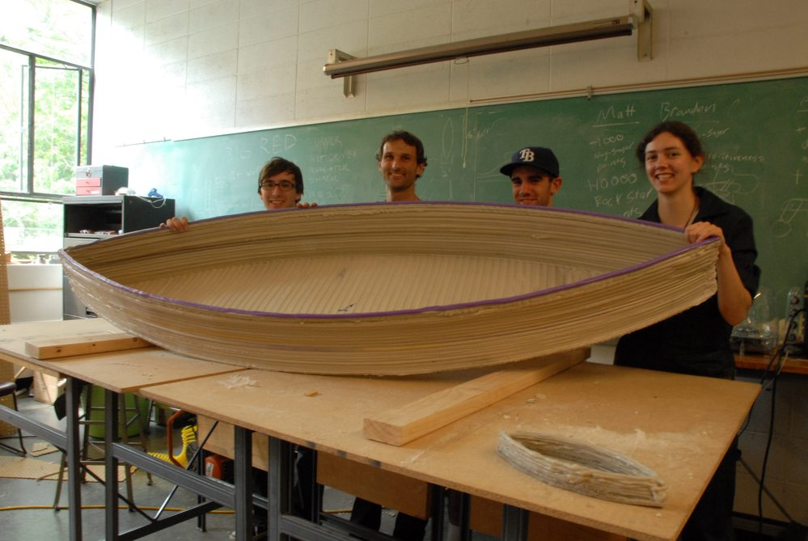
Large-format 3D-printed boat hull produced by FFF.
AbstractComputational fluid dynamics (CFD) is a pivotal tool for naval architects seeking to optimize ship designs by accurately predicting resistance, but the computational demands of CFD pose significant challenges. This study develops a digital tool for predicting the resistance components of the Australian Maritime Engineering Cooperative Research Center (AMECRC) hull. Leveraging machine learning, a surrogate model is built from experimental data of 14 hulls across a range of Froude numbers (0.3–1.0). Linear regression, efficiently trained linear regression, support vector machines, Gaussian process regression, kernel approximation regression, and a neural-network model are compared; the neural-network surrogate performs best while significantly reducing computational time compared to CFD. A user-friendly GUI application is also developed to assist naval architects in predicting resistance for any hull within the AMECRC parameter space.
Key results
ML surrogate from 14 AMECRC hulls, Froude 0.3–1.0
Neural-network model best; large speed-up over CFD
Ships with a GUI tool for naval architects
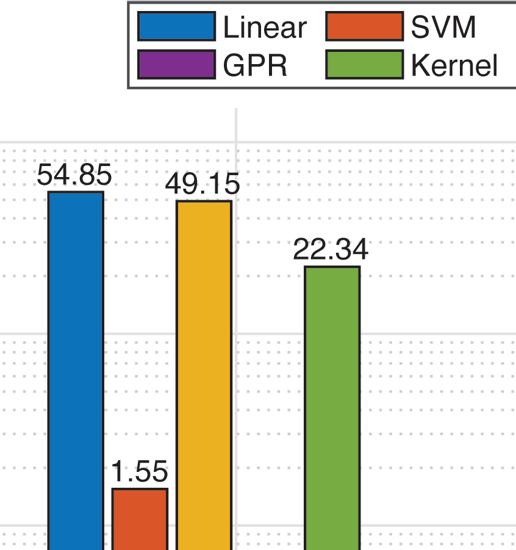
Model comparison (MSE): the neural-network surrogate outperforms the alternatives.
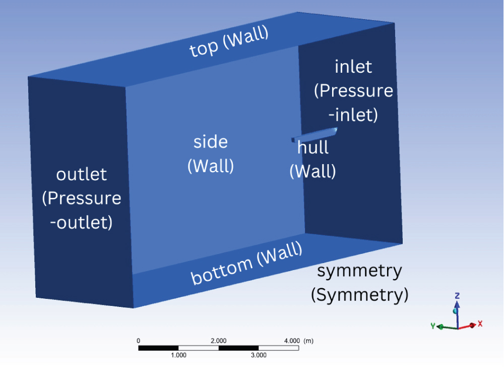
CFD domain used to generate the hull-resistance training data.